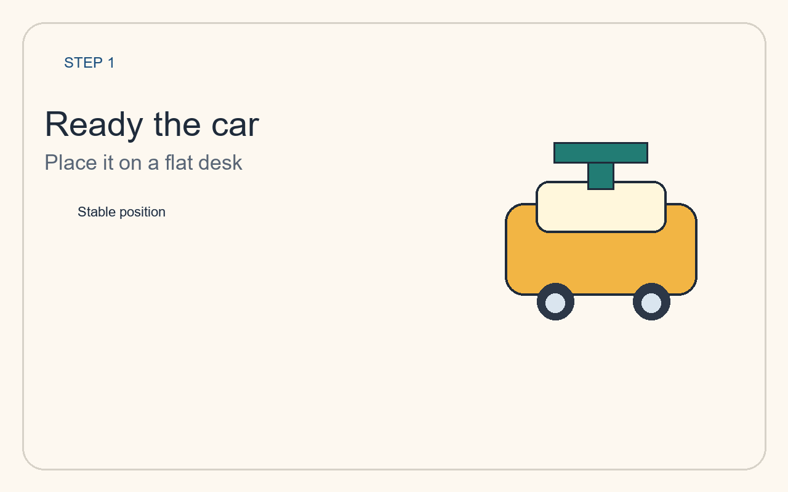
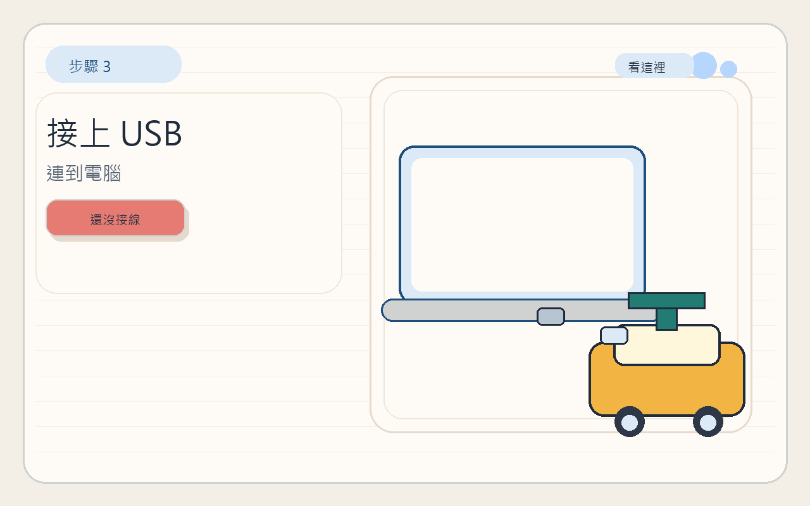
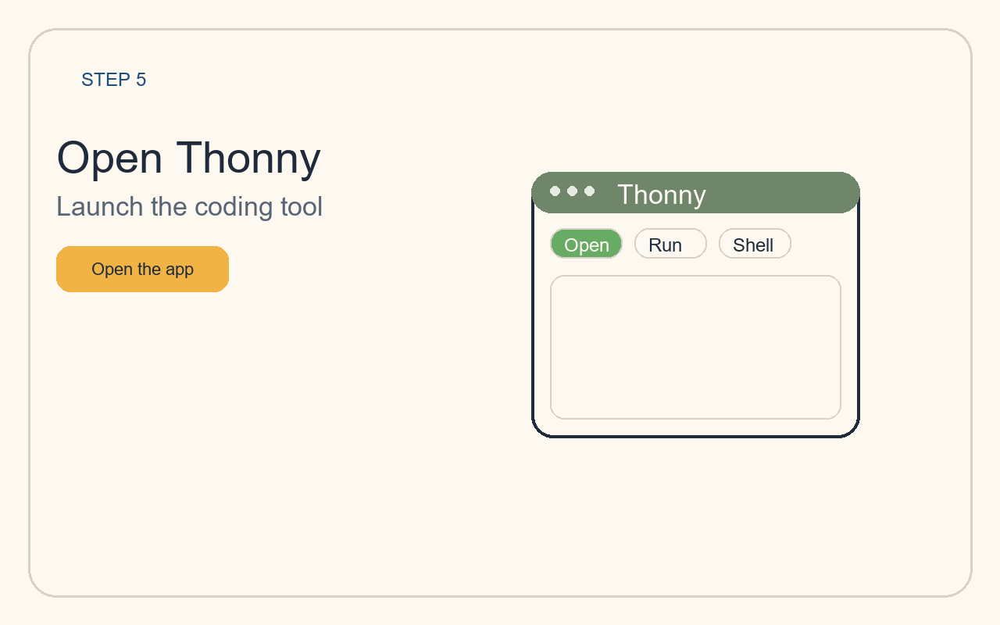
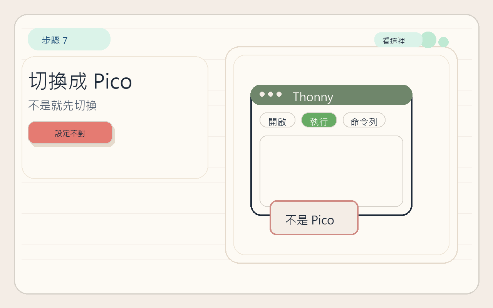
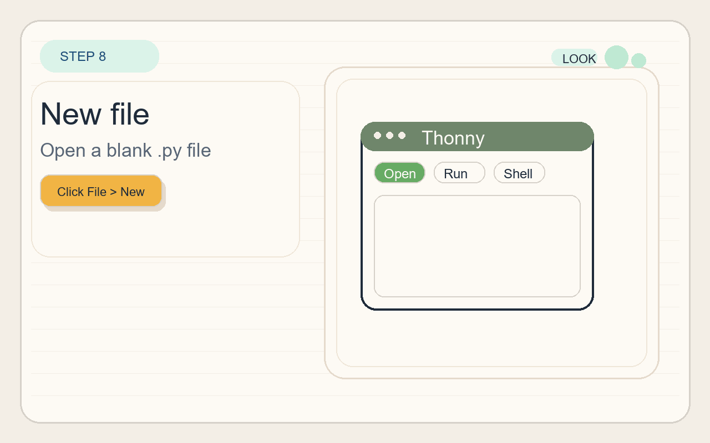
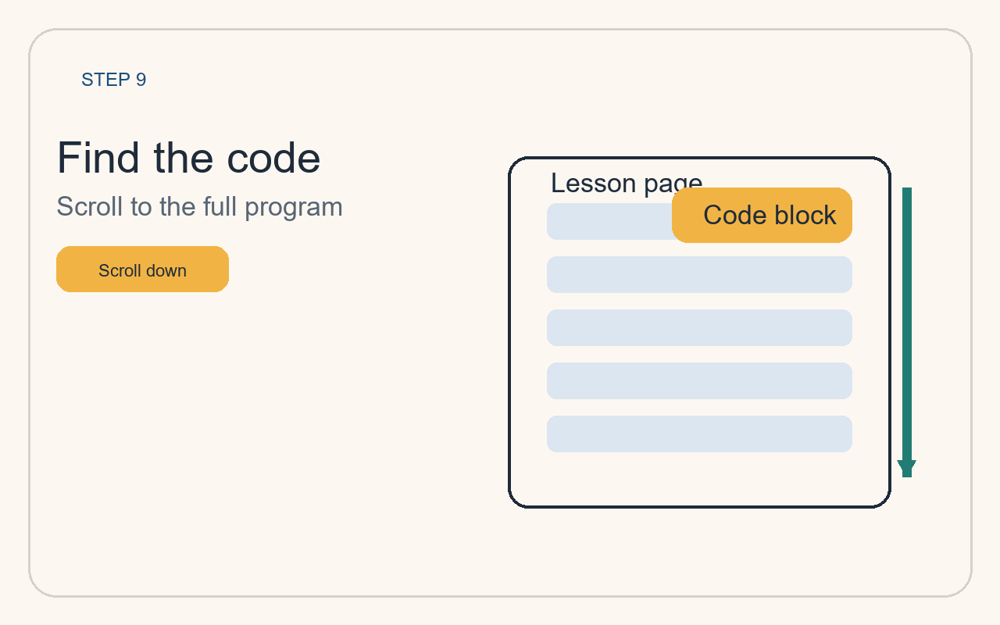
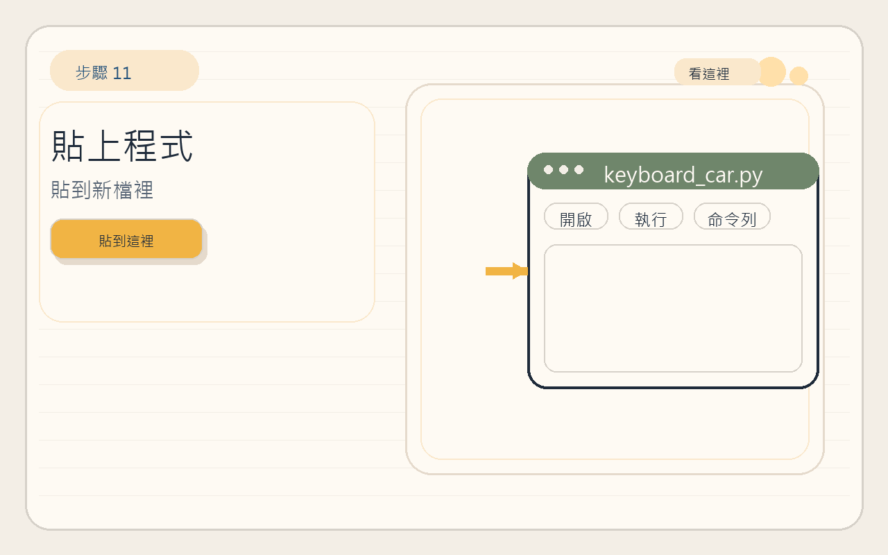
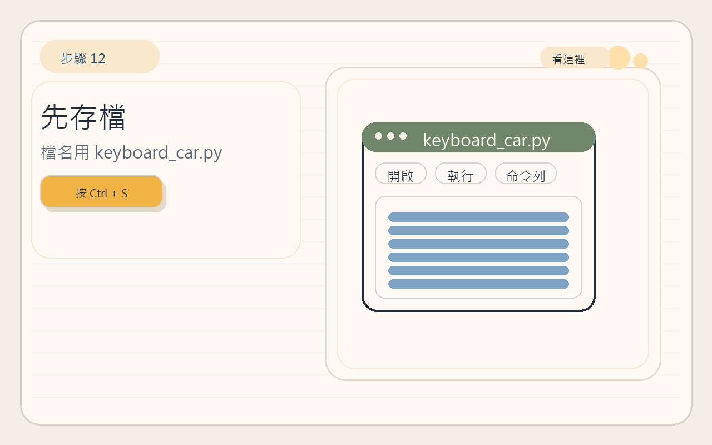
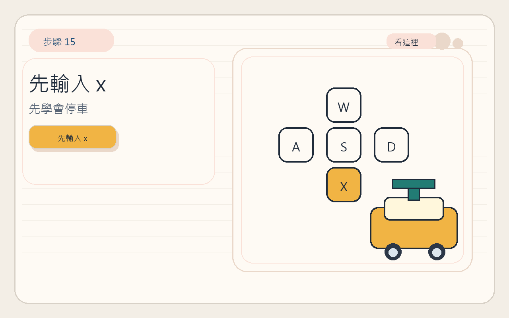
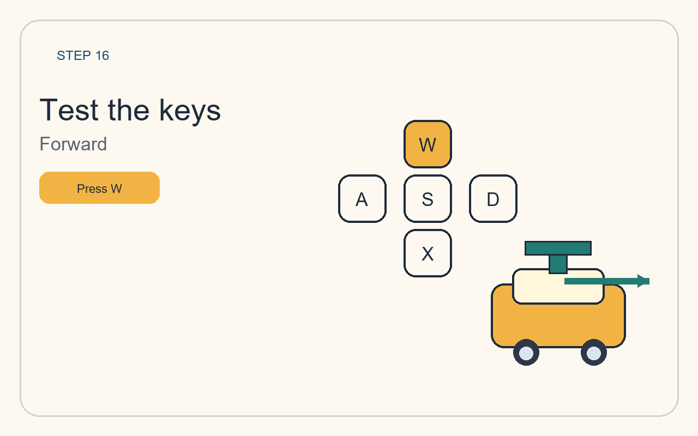

完成這 3 件事就算成功
- 電腦和 Raspberry Pi Pico 小車成功連線。
- 在 Thonny 開新檔並貼上完整程式。
- 在 Shell 輸入 W / A / S / D / X 後，小車能做出對應動作。
Quick Start
這個主題只做一件事：讓學生在 1 小時內，成功用 Thonny 控制 Raspberry Pi Pico 小車。 學生不需要先下載新的程式，只要跟著下面 12 個步驟，把網站上的完整程式貼到 Thonny，就可以讓小車動起來。

本主題使用真實 Raspberry Pi Pico 小車與 Thonny 操作流程作為教學基礎。
12 Steps
每一步都只有一個明確任務。先完成操作，再往下看下一步，不需要一次記住全部內容。
把小車放在平坦桌面，先不要讓它一開始就滑出去。

把 Raspberry Pi Pico 小車和電腦用 USB 線連起來。

在電腦上開啟 Thonny，準備寫今天的程式。

確認右下角已經選到 MicroPython (Raspberry Pi Pico)。

按 File > New，先開一個新的 Python 檔案。

滑到本頁下面的完整程式區塊，準備把程式複製起來。

按下複製按鈕，把完整程式複製到剪貼簿。

回到 Thonny，把剛剛複製的程式貼到新檔內。

按 Ctrl + S，把檔案存成 keyboard_car.py。

按 Run 執行程式，讓小車開始等待你的指令。

先在 Thonny Shell 輸入 x 再按 Enter，確認你知道怎麼讓車子停下來。

依序輸入 w、a、d、s，觀察小車動作，最後記得再輸入 x。

Full Code
這裡是本主題唯一需要的主程式。複製後貼到 Thonny，存檔並按下 Run 即可。
載入中...Code Walkthrough
先掌握程式結構，再看每一段在做什麼。Boot Camp 只需要看懂最重要的幾段。
Step 1
這一段先把四個馬達腳位和板上的 LED 準備好。
from machine import Pin
import time
M1_A = Pin(12, Pin.OUT)
M1_B = Pin(13, Pin.OUT)
M2_A = Pin(10, Pin.OUT)
M2_B = Pin(11, Pin.OUT)
LED = Pin(25, Pin.OUT)Step 2
_set_motor() 決定一個馬達要前進、後退還是停止。
def _set_motor(pin_a, pin_b, direction):
if direction > 0:
pin_a.value(1)
pin_b.value(0)
elif direction < 0:
pin_a.value(0)
pin_b.value(1)
else:
pin_a.value(0)
pin_b.value(0)Step 3
前進、後退、左轉、右轉、停止，都是用前面的函式組合出來的。
def forward():
...
def backward():
...
def turn_left():
...
def turn_right():
...
def stop():
...Step 4
這裡會讀取 Shell 裡輸入的字母，再決定小車要做哪個動作。
command = input("Command (w/a/s/d/x): ").strip().lower()
if command == "w":
forward()
elif command == "s":
backward()
elif command == "a":
turn_left()
elif command == "d":
turn_right()
else:
stop()